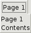
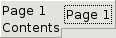

The NoteBook Widget is a collection of 'pages' that overlap each
other, each page contains different information. This widget has
become more common lately in GUI programming, and it is a good way
to show blocks similar information that warrant separation in their
display.
GTK2.Notebook()->set_tab_pos(GTK2.POS_LEFT)->append_page(GTK2.Label("Page 1\nContents"),GTK2.Label("Page 1"))->append_page(GTK2.Label(""),GTK2.Label("Page 2"))->append_page(GTK2.Label("Page 3 contents\nare here!"),GTK2.Label("Page 3"))
GTK2.Notebook()->set_tab_pos(GTK2.POS_TOP)->append_page(GTK2.Label("Page 1\nContents"),GTK2.Label("Page 1"))->append_page(GTK2.Label(""),GTK2.Label("Page 2"))->append_page(GTK2.Label("Page 3 contents\nare here!"),GTK2.Label("Page 3"))

GTK2.Notebook()->set_tab_pos(GTK2.POS_RIGHT)->append_page(GTK2.Label("Page 1\nContents"),GTK2.Label("Page 1"))->append_page(GTK2.Label(""),GTK2.Label("Page 2"))->append_page(GTK2.Label("Page 3 contents\nare here!"),GTK2.Label("Page 3"))->next_page()->next_page()

Properties:
int enable-popup
int homogeneous
int page
int scrollable
int show-border
int show-tabs
int tab-border
int tab-hborder
int tab-pos
int tab-vborder
Child properties:
string menu-label
int position
int tab-expand
int tab-fill
string tab-label
int tab-pack
Style properties:
int has-backward-stepper
int has-forward-stepper
int has-secondary-backward-stepper
int has-secondary-forward-stepper
Signals:
change_current_page
focus_tab
move_focus_out
select_page
switch_page
Called when a different page is selected
 GTK2.Misc()->set_padding()
GTK2.Misc()->set_padding()